Nuestro Proceso Artesanal
🌾 1. Molienda
🥣 2. Amasado
⏳ 3. Reposo
🔥 4. Horno
Panadería Tradicional
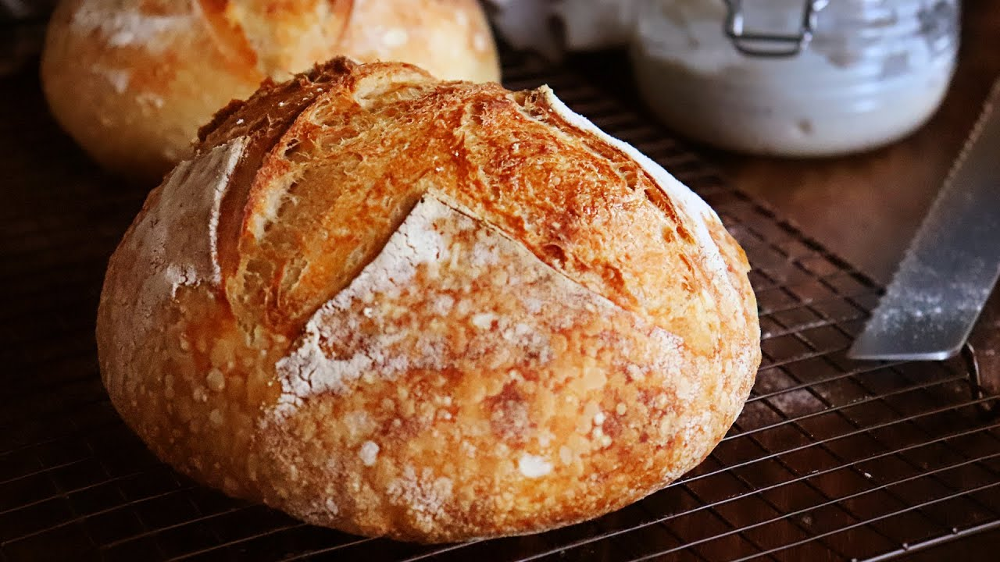
Pan de Masa Madre
Ingredientes: Harina de trigo ecológica, agua, masa madre natural y sal marina.
Elaboración: Fermentación lenta de 24 horas y horneado en suelo de piedra.

Pan de Centeno
Ingredientes: Harina de centeno integral, agua, masa madre de centeno y sal.
Elaboración: Amasado suave, fermentación prolongada en frío y corteza firme.

Pan de Millo (Maíz)
Ingredientes: Harina de maíz tradicional, harina de trigo de fuerza, agua y levadura.
Elaboración: Escaldado previo del maíz al estilo de la frontera y cocción lenta.

Pan Integral 100%
Ingredientes: Harina de trigo 100% integral con todo su grano, agua y sal marina.
Elaboración: Reposo en bloque para desarrollar aromas y horneado tierno.
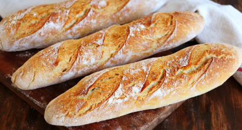
Baguette
Ingredientes: Harina de trigo blanca de fuerza, agua purificada, levadura y sal marina.
Elaboración: Formado alargado clásico, corteza muy crujiente y miga blanca muy aireada.
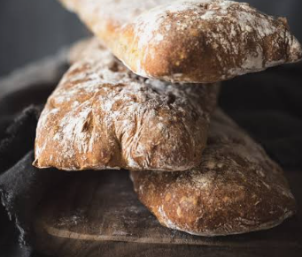
Ciabatta (Chiapata)
Ingredientes: Harina de trigo de alta fuerza, alta hidratación de agua, masa madre y sal.
Elaboración: Formado plano rústico de origen italiano con miga alveolada ideal para bocadillos.
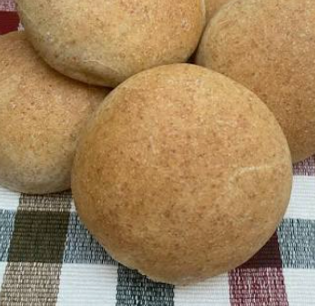
Mollete Andaluz
Ingredientes: Harina de trigo suave, agua, una pizca de manteca o aceite de oliva y sal.
Elaboración: Panecillo blanco ovalado de corteza blanda y miga tierna, ideal para tostar.
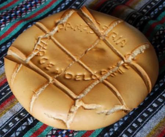
Pan Candeal (de Cruz)
Ingredientes: Harina de trigo candeal de baja fuerza, agua fina, masa madre y sal.
Elaboración: Sobado lento con rodillos que resulta en una miga blanca densa y corteza lisa.
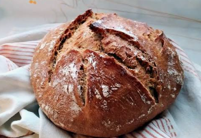
Pan de Pagès
Ingredientes: Harina de trigo tradicional, agua, cultivo de masa madre viva y sal marina.
Elaboración: Hogaza redonda campesina hecha en horno de leña con una miga tierna muy duradera.

Pan Pita
Ingredientes: Harina de trigo blanca refinada, agua templada, levadura de panadero y sal.
Elaboración: Pan plano del Medio Oriente horneado a alta temperatura para crear su bolsillo interior.
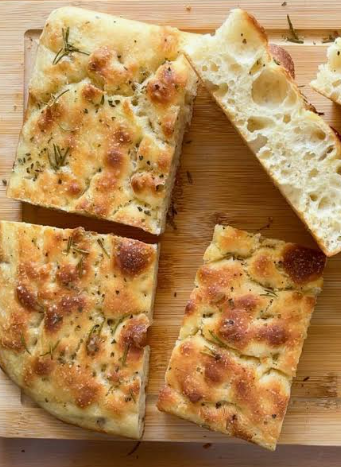
Focaccia Italiana
Ingredientes: Harina de fuerza, agua, abundante aceite de oliva virgen extra, sal gruesa y romero.
Elaboración: Pan plano grueso fermentado directamente en bandeja para lograr una textura esponjosa.

Pan de Cea (I.G.P.)
Ingredientes: Harina de trigo del país, agua pura de manantial, masa madre propia y sal.
Elaboración: Amasado artesanal gallego con una hendidura central característica y sabor ligeramente ácido.
Pastelería y Bollería

Cruasán Artesano
Ingredientes: Harina de fuerza, mantequilla pura, azúcar y levadura.
Elaboración: Hojaldrado a mano con múltiples capas y horneado hasta dorar.
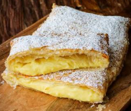
Pastel de Crema
Ingredientes: Hojaldre fino, crema pastelera artesanal infusionada con canela y limón.
Elaboración: Horneado crujiente de la base y relleno en frío para mantener la cremosidad.

Suizos de Azúcar
Ingredientes: Masa de brioche tierna, agua de azahar, huevo y azúcar perlado por encima.
Elaboración: Doble fermentación manual para una miga súper esponjosa y horneado rápido.
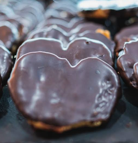
Palmera de Chocolate
Ingredientes: Hojaldre artesano inverso, azúcar caramelizado y cobertura de chocolate puro.
Elaboración: Estirado y pliegue tradicional, horneado intenso y baño caliente en chocolate.

Napolitana de Chocolate
Ingredientes: Masa de hojaldre tierno, crema de chocolate fundido y fideos de chocolate o almendra picada.
Elaboración: Enrollado tradicional de la masa con doble punto de relleno, horneado y decorado superficial.

Caracola de Pasas
Ingredientes: Espral de masa de hojaldre o brioche, crema pastelera fina, pasas sultanas y brillo pastelero.
Elaboración: Distribución del relleno en capa fina, enrollado en cilindro, corte en rodajas y horneado.

Berlina (Bomba) de Crema
Ingredientes: Bollo de masa fina y esponjosa, azúcar granulado para rebozar y crema pastelera suave.
Elaboración: Fritura artesanal controlada del bollo, rebozado inmediato en azúcar y generoso inyectado de crema.
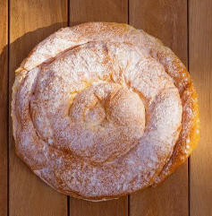
Ensaimada
Ingredientes: Masa azucarada tradicional, manteca de cerdo (saïm), harina de fuerza y azúcar glaseado.
Elaboración: Estirado milimétrico de la masa, untado, moldeado manual en espiral y horneado definitivo.
Empanadas Caseras
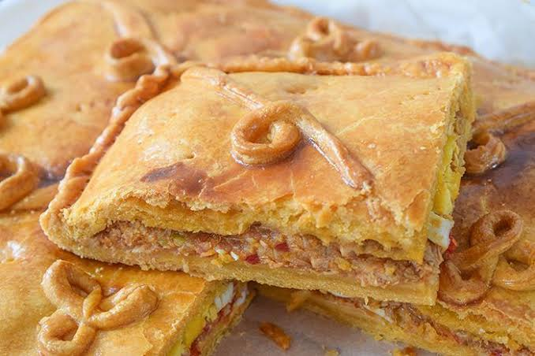
Empanada de Atún Gallega
Ingredientes: Masa de pan crujiente, sofrito tradicional de cebolla, pimientos y atún.
Elaboración: Relleno casero sazonado y horneado lentamente para unificar los sabores.
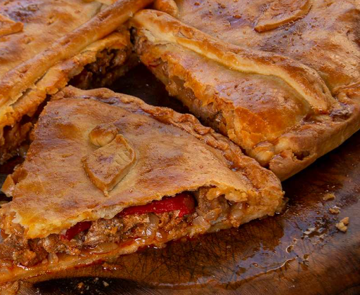
Empanada de Carne Picada
Ingredientes: Harina de trigo, carne vacuna seleccionada, cebolla, huevo duro y especias.
Elaboración: Guiso de carne a fuego lento con el punto justo de jugosidad antes del horneado.

Empanada de Bacalao con Pasas
Ingredientes: Masa artesana, bacalao desmigado desalado, cebolla pochada y pasas dulces.
Elaboración: Contraste agridulce tradicional montado a mano y cocido en horno de piedra.

Empanada de Pollo y Setas
Ingredientes: Masa fina crujiente, pechuga de pollo desmechada, champiñones y sofrito suave.
Elaboración: Relleno cremoso sellado con el repulgue artesanal de la casa y dorado perfecto.
Dónde Encontrarnos
📍 Dirección: Av. de la Raya, S/N - Frontera Hispano-Portuguesa
| 📞 Teléfono: | +34 900 000 000 |
|---|---|
| ✉️ Email: | migas_amigas@gmail.com |
| 🌐 Facebook: | /migasamigas |
| 📸 Instagram: | @migas_amigas |
Castelo Branco es un pueblo que se encuentra entre España y Portugal.